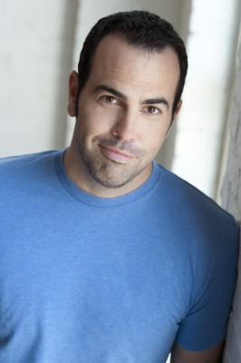
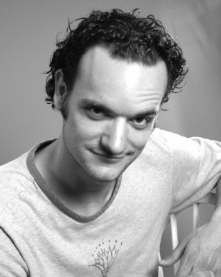

#11577 Ein Verhängnisvoller Sommer
Alternativ: The Mysteries of Pittsburgh (Englischer Titel)


 IMDB-Wertung: 5.4 / 10
IMDB-Wertung: 5.4 / 10  Metascore: 38
Metascore: 38 
Ein Sommer im Pittsburgh der frühen Achtziger: Art nennt ihn "seinen letzten Sommer". Denn danach will er als Börsenmakler dem Ernst des Lebens begegnen. Doch als er auf einer Party Jane begegnet, kommt alles anders. Jane ist intelligent, liebenswert, wunderschön - und leider mit Claveland liiert, einem explosiven, halbseidenen Draufgänger. Was als Dreier-Freundschaft beginnt, wird schnell kompliziert, als Cleveland plötzlich für mehrere Wochen verschwindet. Und dass Arts Vater der Mafiapate von Pittsburgh ist, macht die Dinge auch nicht unbedingt einfacher - ein verhängnisvoller Sommer nimmt seinen Lauf ...
Jahr: 2008
Dauer: 92 Minuten
FSK: 16
Land: USA Studio: Peace Arch Entertainment GroupTonspuren: DTS - ,
Untertitel:
Auflösung: 1080p (1920x800) Größe: 4392 MB
Genre: Drama, Komödie, Abenteuer
Regisseur:  Rawson Marshall Thurber
Rawson Marshall Thurber
Drehbuch: Rawson Marshall Thurber, Michael Chabon
Soundtrack: Theodore Shapiro
Darsteller:
 Jon Foster als Art Bechstein
Jon Foster als Art Bechstein Peter Sarsgaard als Cleveland Arning
Peter Sarsgaard als Cleveland Arning Sienna Miller als Jane Bellwether
Sienna Miller als Jane Bellwether Nick Nolte als Joe Bechstein
Nick Nolte als Joe Bechstein Mena Suvari als Phlox Lombardi
Mena Suvari als Phlox Lombardi Omid Abtahi als Mohammed
Omid Abtahi als Mohammed- Keith Michael Gregory als Keith
- Jarid Faubel als Mohawk Man
- Seth Adams als Feldman
-  Patrick Jordan als Phlox's New Boyfriend
 Stephen Liska als Jimmy Breezy
Stephen Liska als Jimmy Breezy Marc Macaulay als Lenny Burns
Marc Macaulay als Lenny Burns- Jack Baun als Officer #1
- Jeff Hochendoner als Officer #2
-  Aaron Bernard als Club Punk (uncredited)
- Natalie Bloomer als Club Punk / Student (uncredited)
- Neil Booker als Party Goer (uncredited)
- Nicholas Brady als Motorcycle Kid (uncredited)
 Joe Fishel als Party Guest (uncredited)
Joe Fishel als Party Guest (uncredited)- Jeremy Gladen als Student (uncredited)
- Mark Golik als Restaurant Manager (uncredited)
 William Kania als Elevator Attendant (uncredited)
William Kania als Elevator Attendant (uncredited)- Shaz Khan als Lebanese Guy (uncredited)
- Meritt Latimore als Woman / Couple Seated at Restaurant (uncredited)
- David Morse als Sous Chef (uncredited)
 Phil Nardozzi als Diner Patron (uncredited)
Phil Nardozzi als Diner Patron (uncredited)- Joe Pawlenko als Bartender (uncredited)
- Mark Tierno als Priest (uncredited)
- Ali Reed als Female Book Barn Employee
- James A. Harper als Teen Book Barn Employee
- Don Wadsworth als Class Instructor
- Christian Hand als Punk Rock Bathroom Patron
- Tim Hartman als Restaurant Manager
- Shannon Williams als Lurch
- Max Havrilla als Little Boy in Book Barn
- Jocelyn Wrzosek als Townie
- Tommy Lafitte als Precinct Officer
- Tony Amen als Mobster (uncredited)
 John W. Iwanonkiw als Guy at Police Station (uncredited)
John W. Iwanonkiw als Guy at Police Station (uncredited)- Katie Jensen als Club Punk (uncredited)
- Frederick E. Kowalo als Biker Funeral Attendee (uncredited)
- David Macerelli als Cemetery Worker (uncredited)
- Andrew McCune als Hotel Bellhop (uncredited)
- Buzz McEntire als Club Punk (uncredited)
- Dominic Mecchia als Funeral Attendee (uncredited)
- Jeremy Moon als Businessman (uncredited)
- Walter E. Myal als Elevator Attendant / Student (uncredited)
- Jackson Nunn als Jail Inmate (uncredited)
- Peacoe Reilly als Club Punk Rocker (uncredited)
- Kyle Shepard als Curly Blonde Club Punk (uncredited)
Datei: X:\NEU\Verhängnisvoller Sommer, Ein (2008, FSK16, 1920x800).mkv seit 30.07.2019
 Es gibt insgesamt 187 Filme in der Gruppe 'NEU'
Es gibt insgesamt 187 Filme in der Gruppe 'NEU'